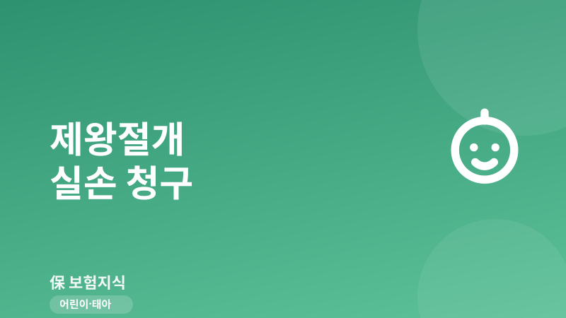
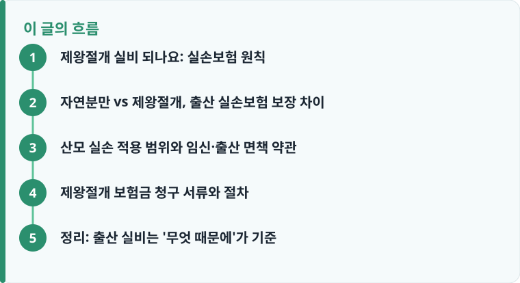

정상적인 임신·출산·제왕절개는 실손보험 표준약관상 '보상하지 않는 사항'으로 원칙적 면책이며, 출산 자체의 실비 청구는 어렵습니다.
제왕절개도 국민건강보험 급여 항목이라 본인부담이 크지 않고, 임신과 무관한 질병 치료라면 실손 보상 여지가 생깁니다.
신생아의 질병·인큐베이터 비용은 산모 실손이 아니라 태아보험 영역이므로, 대비하려면 출산 전 설계가 필요합니다.
제왕절개 실비 되나요: 실손보험 원칙
가장 많이 검색되는 "제왕절개 실비 되나요"에 대한 답은 원칙적으로 '어렵다'입니다. 실손의료보험 표준약관은 '임신, 출산(제왕절개 포함), 산후기로 입원·통원한 비용'을 보상하지 않는 사항으로 명시합니다. 즉 아이를 낳는 정상적인 출산 행위는, 방식이 자연분만이든 제왕절개든 실손보험의 보상 대상이 아닙니다.
대신 출산 자체에는 국민건강보험이 급여로 적용됩니다. 여기에 국가가 지원하는 임신·출산 진료비 바우처가 더해져 실제 본인부담은 크지 않게 설계돼 있습니다. 실손보험이 급여·비급여를 어떻게 나눠 보장하는지 헷갈린다면 실손보험이 보장하는 급여·비급여 구조를 먼저 살펴보면 왜 출산이 예외로 빠지는지 이해가 쉽습니다.
자연분만 vs 제왕절개, 출산 실손보험 보장 차이
자연분만과 제왕절개는 의료비 구조가 다릅니다. 제왕절개는 수술과 마취, 입원이 동반돼 총비용이 자연분만보다 크지만, 두 방식 모두 건강보험 급여가 적용돼 본인부담률은 낮은 편입니다. 다만 실손보험 관점에서는 둘 다 '출산'이라는 하나의 범주로 묶여 면책된다는 점이 같습니다.
따라서 '제왕절개는 수술이니까 수술비가 나오지 않을까'라는 기대는 성립하기 어렵습니다. 출산과 직접 연결된 수술은 별도 수술비 특약에서도 대개 제외됩니다. 결국 자연분만과 제왕절개의 실질적 차이는 실손 보장 여부가 아니라, 입원 일수와 비급여 상급병실료 등 본인이 추가로 부담하는 비용의 크기에서 갈립니다. 참고로 출산 관련 정액 보장은 실손이 아니라 별도의 출산·산모 특약이나 태아보험 담보로 준비하는 구조라는 점도 함께 기억해 두면 좋습니다.

산모 실손 적용 범위와 임신·출산 면책 약관
그렇다면 산모 실손은 전혀 쓸모가 없을까요. 그렇지는 않습니다. 면책되는 것은 '임신·출산 그 자체'이며, 임신과 인과관계가 없는 질병 치료는 보상될 수 있습니다. 예를 들어 임신 중 맹장염 수술처럼 출산과 무관한 질병으로 입원·수술했다면 실손 청구 여지가 있습니다. 반대로 임신중독증, 조기진통처럼 임신에 직접 기인한 합병증은 면책으로 다뤄지는 경우가 많아 약관 확인이 필요합니다. 같은 진료라도 '출산 때문인지, 별개 질병 때문인지'가 보상 여부를 가르므로, 진단서에 사유가 어떻게 기재됐는지가 실제 심사에서 결정적인 역할을 합니다.
또 하나 반드시 구분할 것은 신생아 보장입니다. 태어난 아기의 황달, 저체중, 인큐베이터 입원 같은 비용은 산모의 실손보험이 아니라 신생아 질병까지 대비하는 태아보험 보장 범위에서 다뤄집니다. 태아 특약은 출산 전에만 넣을 수 있어, 늦으면 담보 자체가 사라지므로 태아보험은 임신 몇 주까지 가입해야 하는지 미리 확인해 두는 것이 안전합니다.
작성·검수 기준
이 글은 특정 보험상품을 권유하기 위한 것이 아니라, 제왕절개 출산과 실손보험의 관계를 표준약관 기준으로 설명하기 위해 작성했습니다. 임신·출산 면책의 범위, 합병증 보상 여부, 신생아 담보는 가입 시점의 약관과 개별 상품에 따라 달라질 수 있습니다.
정확한 보장 여부는 본인 증권의 약관과 상품설명서, 그리고 실손보험 청구 방법과 순서를 함께 확인하는 것이 가장 정확합니다.
제왕절개 보험금 청구 서류와 절차
출산 자체가 아닌 임신 관련 질병 치료나, 태아보험·정액형 출산 담보가 있는 경우 청구가 필요합니다. '제왕절개 보험금 청구 서류'는 아래 순서로 준비하면 누락을 줄일 수 있습니다.
- 먼저 본인 증권에서 출산·임신 질병 관련 담보와 면책 조항을 확인합니다.
- 진단서 또는 수술확인서에 제왕절개 사유(질병명·수술명)를 명확히 기재받습니다.
- 진료비 영수증과 진료비 세부산정내역서를 병원에서 함께 발급받습니다.
- 임신 무관 질병 청구라면 인과관계를 뒷받침할 진료기록을 챙깁니다.
- 보험금 청구서를 작성해 앱·팩스·방문 중 편한 방법으로 접수합니다.
어떤 서류가 담보별로 필요한지 한 번에 정리하고 싶다면 보험금 청구 서류 준비 체크리스트와 청구에 필요한 서류 목록을 함께 보면 준비가 빨라집니다.
정리: 출산 실비는 '무엇 때문에'가 기준
제왕절개는 방식과 상관없이 정상 출산이라면 실손보험 면책이지만, 임신과 무관한 질병 치료라면 보상 여지가 있습니다. 산모 실손과 신생아 담보를 나눠 이해하고, 청구가 필요한 상황에는 수술 사유가 드러난 서류를 미리 갖추는 것이 핵심입니다.
다른 보험 정보 글이 궁금하다면 보험지식 블로그에서 이어 읽어 보세요. 가입 전에는 반드시 약관과 상품설명서를 확인하는 것이 가장 안전한 방법입니다.